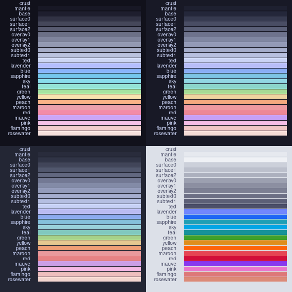
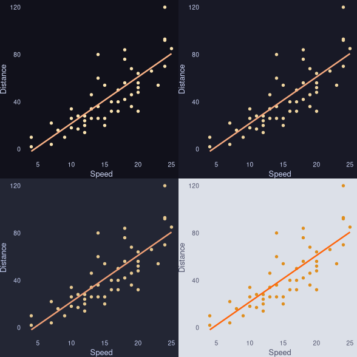

{ricethemes}I’ve written a R package with popular desktop themes for {ggplot2}. The idea
is that the package will enable analysts to explore data using their preferred
desktop theme and have a coherent development enviorment. For now, I’ve added
the Catppuccin theme with four
flavors: latte, frappe, macchiato, and mocha. I plan on adding more
themes in the future, depending on the demand.
I recommend using the pak package to install
ricethemes.
pak::pkg_install("mackrics/ricethemes")
The package contain functions to obtain hex codes for the various colors, themes, and functions to display the colors.

The classic cars correlation plot looks something like this for the four
flavors:

Any feedback or request is much appreciated, preferably as a GitHub issue in this repository.